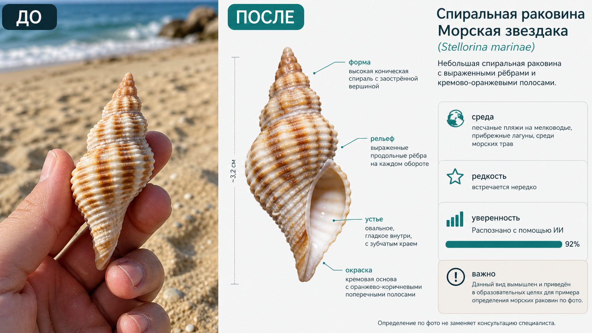

Промтзилла
Если нашёл ракушку на пляже или в коллекции, ИИ может дать первичную справку: на что она похожа, какие признаки важны и что проверить дальше.

Пошаговая инструкция
- 1Сфотографируй ракушку сверху, сбоку и со стороны устья; положи рядом монету или линейку для масштаба.
- 2Загрузи фото в инструмент определения ракушки по фото.
- 3Вставь промт и попроси объяснить признаки: форму, завиток, рельеф, цвет и размер.
- 4Укажи место находки, если знаешь пляж, море или страну.
- 5Проверь правила региона: некоторые виды и находки нельзя вывозить или собирать.
Пример результата
На обложке показан типичный сценарий: слева исходное фото, справа результат, который можно получить через инструмент определения ракушки по фото.
Промт
RU
Определи ракушку на фото. Ответ дай как научно-популярную карточку: — вероятный вид или семейство; — уровень уверенности; — признаки: форма, завиток, устье, рёбра, рельеф, цвет, полосы, размер; — возможная среда обитания; — редкость и похожие виды; — можно ли безопасно брать такую находку, какие ограничения бывают; — что нужно сфотографировать дополнительно для уточнения. Если вид нельзя определить точно, не придумывай латинское название. Дай осторожную версию и объясни, какие признаки недостаточно видны.
EN
Identify the seashell in the photo. Answer as a popular science card: — probable species or family; — confidence level; — clues: shape, spiral, aperture, ribs, texture, color, bands, size; — possible habitat; — rarity and similar species; — whether it is safe/legal to collect such a find and what restrictions may exist; — what should be photographed additionally for clarification. If the species cannot be identified accurately, do not invent a Latin name. Give a cautious version and explain which features are not visible enough.
Важно
Определение ракушек по фото приблизительное. Не собирай живые организмы и проверяй местные правила, особенно в заповедниках и при вывозе находок через границу.
Теги